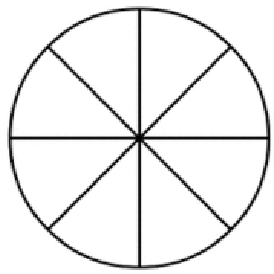
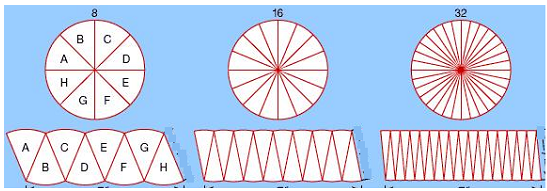

Recall that the perimeter of a region means the length of its boundary or outer edge.
Definition.
The perimeter of a two-dimensional figure is the total distance around the edge of the figure.
In an earlier lesson, we learned to find the perimeter of a straight-sided figure by adding the lengths of its sides.
For example, perhaps you know a formula for the perimeter of a rectangle. Because the opposite sides of the rectangle are equal in length, we can calculate its perimeter by
But how can we find the perimeter of a figure with curved sides, such as a circle? Well, we can use a tape measure, or even a piece of string, but we’d like a formula that gives us the distance around the circle in terms of the size of the circle.
Subsection3.4.2Circumference of a Circle
We’ll begin be reviewing some terminology about circles.
Definition.
The distance from the center of a circle to any point on the circle itself is called the radius of the circle.
The diameter of a circle is the length of a line segment joining two points on the circle and passing through the center.
Thus, the diameter of a circle is twice its radius.
The perimeter of a circle is called its circumference. We can say that
the circumference is the distance around the circle,
and the diameter is the distance across the circle.
It seems clear that the bigger the diameter of the circle, the bigger its circumference will be. But is there a formula for finding the circumference of a circle in terms of its diameter?
Activity3.4.1.Circumference.
Collect three or four circular objects, the larger the better. Here are some suggestions: a dinner plate, a clock face, a trash can lid, a lamp shade. You will also need a measuring tape.
Measure the circumference of each circular object, and enter it into the table below. Then estimate the diameter of each object as follows: hold the end of the tape measure at one point on the rim, and sweep the tape measure around the rim until you find the largest distance across the circle.
Circumference
Diameter
\(\dfrac{\text{Circumference}}{\text{Diameter}}\)
Object 1
\(\hphantom{000000}\)
\(\hphantom{000000}\)
\(\hphantom{000000}\)
Object 2
\(\hphantom{000000}\)
\(\hphantom{000000}\)
\(\hphantom{000000}\)
Object 3
\(\hphantom{000000}\)
\(\hphantom{000000}\)
\(\hphantom{000000}\)
Object 4
\(\hphantom{000000}\)
\(\hphantom{000000}\)
\(\hphantom{000000}\)
For each circular object, compute the ratio \(\dfrac{\text{Circumference}}{\text{Diameter}}\text{.}\) You should find that the circumference is always a little more than three times the diameter.
Compute the average of the four ratios you found in Step 3.
It is a fact that the circumference of every circle is a little more than three times its diameter. More precisely,
An irrational number is one whose decimal expression never ends. You can read more about irrational numbers in Section 4.3.
Most scientific calculators have a key for \(\pi\) that you can use in calculations. If your calculator does not have a key for \(\pi\text{,}\) you can use the approximation \(\pi \approx 3.14\text{.}\)
Example3.4.2.
Find the distance around the edge of a circular skating rink whose diameter is 50 feet.
The distance around the edge is the circumference of the circle. So we are looking for the circumference of a circle whose diameter is 50 feet. We’ll apply the formula above.
\begin{equation*}
C = \pi \times d = \pi \times 50
\end{equation*}
Using a calculator, we find that \(C = 157.07963\) feet, or approximately 157 feet.
Checkpoint3.4.3.
Find the distance around the edge of a 10 peso coin with diameter 28 millimeters.
\(\blert{\text{Question 1:}}\) To find the circumference of circle when we know its diameter, we multiply by \(\pi\text{.}\) How can we find the diameter of a circle if we know its circumference?
Example3.4.4.
The distance around a circular pond at the arboretum is approximately 500 yards. How far is it from the edge of the pond to the gazebo at its center?
We are given the circumference of a circle and asked to find its radius. First we’ll find the diameter of the circle, using the formula \(C = \pi \times d\text{.}\) We substitute the value of \(C\text{,}\)\(\alert{500}\) yards, and solve the formula for \(d\text{.}\)
\begin{align*}
\alert{500} \amp = \pi \times d ~~~~~~~~~~~\blert{\text{Divide 500 by } \pi}\\
d \amp = \dfrac{500}{\pi}
\end{align*}
Use your calculator to find that is approximately 150.15 yards. Because the radius of a circle is half its diameter, we divide 150.15 by 2 to find that the radius is 79.58 yards. The distance to the gazebo from the edge of the pond is about 79.6 yards.
Checkpoint3.4.5.
A tree trunk has a circumference of 2 meters. What is the radius of the trunk?
\(\blert{\text{Question 2:}}\) How can you find the circumference of a circle if you know its radius instead of its diameter?
\(\blert{\text{Question 3:}}\) Can you write a formula for the circumference of a circle in terms of its radius?
Subsection3.4.3Area of a Circle
Recall that the area measures the amount of space in a region. We measure area in square units, such as square inches or square meters. It might seem strange to ask how many square units fill the inside a circle, but you can imagine painting the inside of the circle, and then asking what size rectangle we can cover with the same amount of paint.
Activity3.4.2.Area of a Circle.
We can estimate the area of a circle by counting the number of squares that fit inside.
On the circle on the left, put a dot in each square that is completely within the circle. Count the number of squares with dots.
The area of the circle is larger than square units.
The circle on the right is enclosed in a square. What is the area of that square?
The area of the circle is smaller than square units.
If we make the squares smaller, we can get a better estimate for the area of the circle. Repeat parts (a) and (b) from Step 1.
On the circle on the left, put a dot in each square that is completely within the circle. Count the number of squares with dots.
The area of the circle is larger than square units.
The circle on the right is enclosed in a square. What is the area of that square?
The area of the circle is smaller than square units.
Of course, we have to take into account that the squares in Step 2 are smaller than the squares in Step 1: four Step 2 squares make one Step 2 square. So we need to divide each of our Step 2 answers by 4.
The area of the circle is between and square units.
We can continue improving our estimate of the area inside the circle by using smaller and smaller squares, but wouldn’t it be nice to have a formula we could use to calculate the area in terms of the circle’s radius?
Subsection3.4.4A Formula for the Area of a Circle
In Activity 3.4.2, we broke up the area of the circle into small squares. To find our formula for the area, we will break up the circle into small wedges. Before we start, review your answer to Question 3 after Checkpoint 3.4.5:
Write a formula for the circumference of a circle in terms of its radius.
Circumference =
Activity3.4.3.A Formula for the Area of a Circle.
Here is a circle divided into 8 wedges. The radius of this circle is \(R\text{.}\) Trace the circle onto a sheet of paper, then cut out all the wedges.

Arrange the wedges as shown in the lefthand picture below. Does it look sort of like a rectangle? (Or maybe a parallelogram?)
No? Okay, what if you slice off half of the first wedge and stick it on the other end, as shown in the righthand picture above?
If you are still not convinced, consider what happens when we increase the number of wedges. Look at the figure below.

Does rearranging the pieces of the circle change its area?
So if we can find the area of the almost-rectangle, it will also be the area of the circle. Your answers to (a) and (b) below will involve the radius of the circle.
What is the (vertical) width of the rectangle? Hint: Where was that line segment in the circle?
Width =
What is the (horizontal) length of the rectangle? Hint: Look at the first picture in Step 3.
Length =
Finally, use your answers to Step 4 to write a formula for the area of the rectangle -- and the circle. Your formula should be written in terms of the radius of the circle.
\begin{equation*}
\blert{\text{Area of circle } = \fillinmath{XXX}}
\end{equation*}
The number 2 in \(r^2\) is called an exponent, and \(r\) is called the base. An exponent tells us how many times the base occurs as a factor in a product. So
\begin{equation*}
r^2 \hphantom{0000}\text{ means } \hphantom{0000} r \times r
\end{equation*}
The product is called a power of the base. We compute powers before we compute the rest of a product.
How much does the Earth weigh? That depends on two things: the density of the materials that make up Earth, and the volume of the planet. The volume of a three-dimensional figure measures how much space is inside the figure, and is given in cubic units.
As with the area of a circle, it may seem strange to measure the inside of a round object like a sphere in cubic units. Imagine filling the sphere with liquid, and then pouring the liquid into a rectangular box to measure its volume.
We can also find the volume of a sphere if we know its radius. The formula for the volume of a sphere is easy to use, but not so easy to justify, so in this lesson we will concentrate on how to apply the formula.
(By the way, the Earth weighs \(1.317 \times 10^{25}\) pounds.)
In the formula for the volume of a sphere, notice that the exponent on \(r\) is 3. Recall that \(r^3\text{,}\) which we read as "\(r\) cubed," means \(r\times r \times r\text{.}\)
Example3.4.9.
Find the volume of a spherical water tank whose radius is 20 yards.
This quilt pattern is called Drunkard’s Path. The entire block (without the border) measures 30 centimeters on each side, and it is made out of 16 patches.
Find the dimensions and area of each patch.
Each patch includes a quarter of a circle, and the radius of that quarter-circle is four-fifths of the side of the patch.
Find the radius and area of one quarter-circle.
Find the area of one blue piece.
What is the total area of the blue pieces needed for one quilt block?
This quilt is called Birdhouse Row. Each birdhouse sits in a square that measures \(6\dfrac{1}{2}\) inches on a side.
Find the area of one square.
The blue roof of the birdhouse is \(1\dfrac{1}{2}\) inches wide. Find the area of one birdhouse roof.
The small patch of background color at the bottom of the birdhouse is half a square with side length \(1\dfrac{1}{2}\) inches. Find the area of this triangle.
The door to each birdhouse is a circle of diameter \(1\dfrac{1}{2}\) inches. Find the area of one door.
The rest of the front of each birdhouse is red. What is the total area of the red pieces in the quilt?
Challenge Problem.
The radius of the earth is approximately 3963 miles. Suppose you have a string stretched tight around the equator of the earth.
How long is the string?
Now suppose you add 10 feet to the length of the string. How long is it now (in feet)?
Stretch out your new string so that it forms a circle a little bit bigger than the equator. What is the radius of the new circle?
How high above the surface of the earth does the new circle of string sit?
Subsection3.4.6Vocabulary
radius
diameter
circumference
pi
Exercises3.4.7Practice 3.4
1.
What is the circumference of a circle?
2.
Explain how you could draw a circle using a piece of string, a pencil, and a nail.
3.
How did we find the value of \(\pi\) in this lesson?
4.
Why do we say that \(\pi\) is an irrational number? (If you don’t remember the meaning of "irrational number," look it up.)
5.
Some people use \(\dfrac{22}{7}\) as an approximation for \(\pi\text{.}\) Is that value more or less than \(\pi\) ?
6.
We justified the formula for the area of a circle by cutting the circle into and rearranging them into a .
7.
Sketch a circle and one of its diameters. State a formula for the circumference of a circle in terms of its diameter.
8.
Sketch a circle and one radius. State a formula for the circumference of a circle in terms of its radius.
9.
Sketch a circle and one radius. State a formula for the area of a circle in terms of its radius.
10.
Sketch a sphere and one radius. State a formula for the volume of a sphere in terms of its radius.
Exercise Group.
For Problems 11-13, find the circumference of the circle. Round your answers to two decimal places.
11.
\(r =\) 8 inches
12.
\(r =\) 3 feet
13.
\(r =\) 1.2 meters
14.
\(r =\) 10 centimeters
Exercise Group.
For Problems 15-18, find the radius of the circle whose circumference is given. Round your answers to two decimal places.
15.
\(C =\) 60 yards
16.
\(C =\) 8.7 feet
17.
\(C =\) 42.5 inches
18.
\(C =\) 100 meters
Exercise Group.
For Problems 19-22, find the area of the circle. Round your answers to two decimal places.
19.
\(r =\) 0.2 centimeter
20.
\(r =\) 0.5 meter
21.
\(d =\) 25 yards
22.
\(d =\) 8 feet
Exercise Group.
For Problems 23-28, find the volume of the sphere.
23.
\(r =\) 2 meters
24.
\(r =\) 6 centimeters
25.
\(r =\) 0.1 centimeter
26.
\(r =\) 0.3 inches
27.
\(r =\) 5.2 feet
28.
\(r =\) 25 meters
Exercise Group.
Problems 29-36 involve an area, a circumference, or a volume. Decide which measure is appropriate, then solve the problem.
29.
A rotating lawn sprinkler waters a circle whose edge is 8 feet from the sprinkler. How much lawn does the sprinkler water?
30.
Francine wants to install a circular window in the stairwell in her house. The window has a diameter of 30 inches. How much weather-stripping will Francine need to seal the window?
31.
To find the diameter of a large tree in his yard, Delbert wraps a string around the trunk and thenmeasures its length. If the string is 72.25 inches long, what is the diameter of the tree?
32.
How much canvas material is needed to cover a circular wading pool with diameter 14 feet?
33.
The first solo transatlantic balloon crossing was completed in 1984 in a helium-filled balloon called Rosie O’Grady. The diameter of the balloon was 58.7 feet. Assuming that the balloon was approximately spherical, calculate the amount of helium it contained.
34.
The circumference of a spherical candle is 15.7 inches. What is the amount of wax in the candle?
35.
Evaporation from a body of water depends upon the exposed surface of the water. Graham measures the distance around the edge of a large circular fish pond as 75.4 feet. Calculate the size of the water surface.
36.
Francine has 200 yards of fencing material. How much space can she enclose for her horse if she makes a circular pen?
37.
The London Eye, or the Millennium Wheel, is an observation wheel on the South Bank of the River Thames in London. It is 443 feet tall, and the diameter of the wheel is 394 feet. It has 32 "capsules" for passengers.
What is the circumference of the wheel?
The wheel makes one revolution every 30 minutes. What is the speed of the capsules, in feet per minute?
What is the speed of the capsules in miles per hour?
38.
The Prague Astronomical Clock, or Orloj, was built in 1410 and is the oldest clock in the world that still functions. The clock mechanism has three main components: the astronomical dial, representing the position of the Sun and Moon in the sky; an hourly show of moving figures striking the time; and a calendar dial with medallions representing the months.
The diameter of the clock face is 300 centimeters. What is the circumference of the clock face?
The clock has no minute hand, and the hour hand makes one revolution every 24 hours. What is the speed of the tip of the hour hand, in meters per minute?
What is the speed of the tip of the hour hand, in kilometers per hour?
Exercise Group.
For Problems 39-44, find the area and perimeter of the figure. Round your answers to two decimal places.
39.
40.
41.
42.
43.
44.
45.
Find the diameter of a circular window if its area should be approximately 16 square feet.
46.
A chocolate cake recipe fits into a rectangular pan measuring 8 inches by 10 inches. If you want to bake the same cake in a circular pan of the same size, what should its radius be?
47.
Angela has fenced off a 15-foot square vegetable garden in the corner of her backyard. Her pet goat, Capri, is tethered by a 15-foot rope to the corner of the garden fence, as shown below. What is the area of grass that Capri can reach?
48.
Delbert’s front lawn is 40 feet long and 20 feet wide. He installs sprinklers around the perimeter, as shown below. If the sprinklers are adjusted so that there is no overlap in their range, what is the area of the lawn that will be missed?